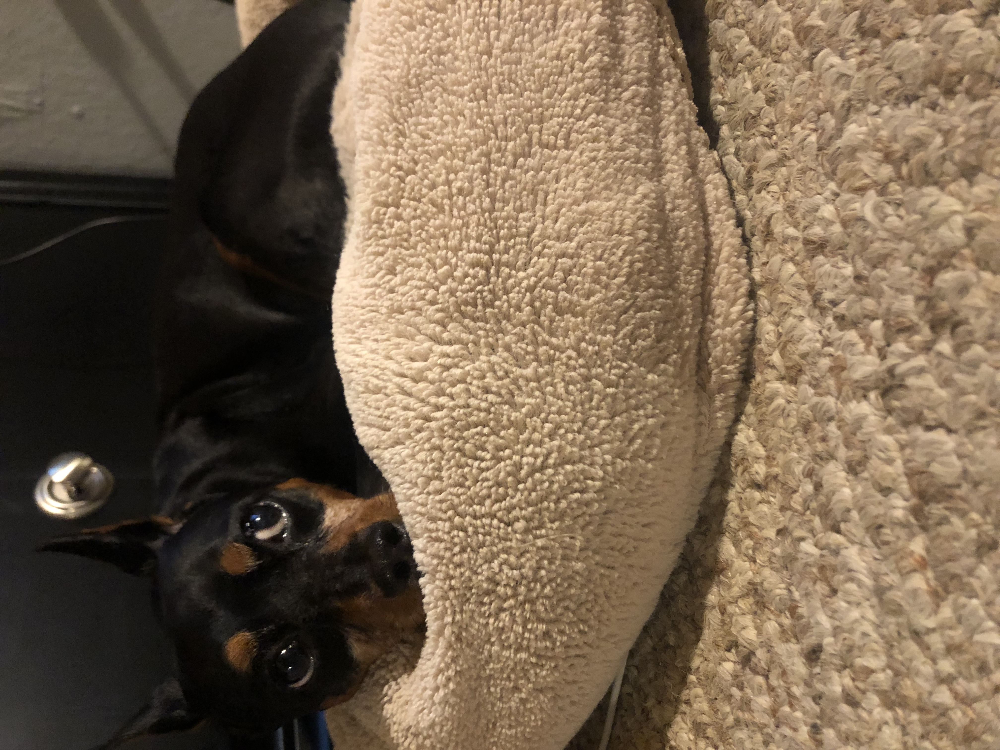
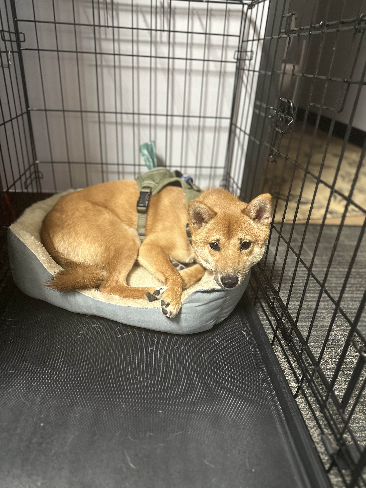
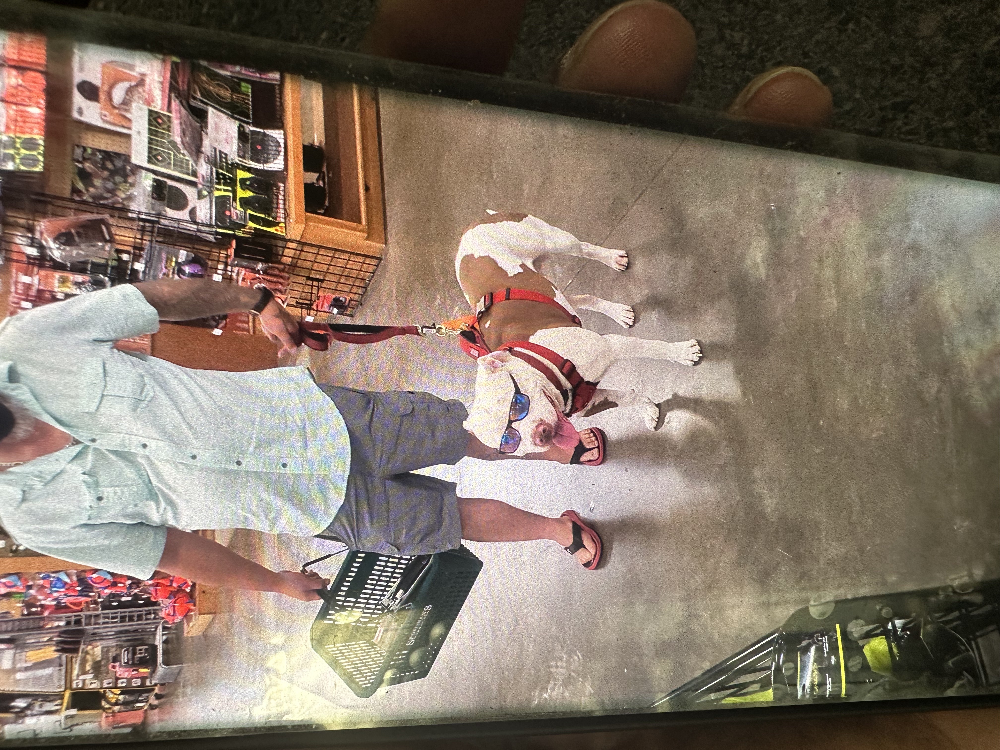
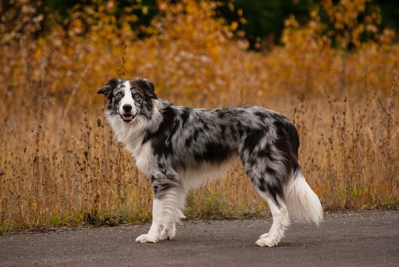
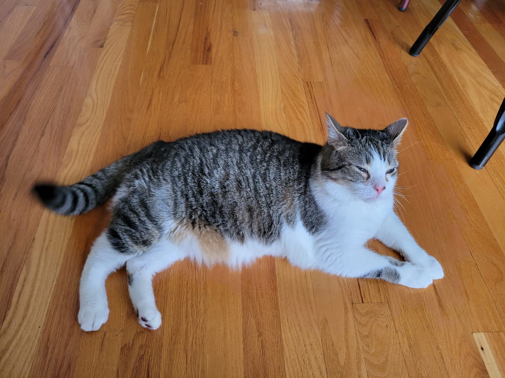

More Awesome Pets!
|  |
Chloe
My friend Jaden has a Miniature Pincher and her name is Chloe.
She is bit older than Harlym, maybe 10 years old?
She's a very sweet dog. Her body has just a little bit of a "build".
My friend Sarah and I sometimes joke that Chloe gets really buff at the gym (⌐■_■).
|
|  |
"Mr.Sheebs"
This is Ren's dog, Koda. Koda is a Shiba Inu and he kinda looks like a fox.
Ren brings Koda to work all the time, and he's a very adorable dog!
He doesn't get much work done, but he's still a great member on our team.
We like to play with him when we have downtime, and he loves chewing on his stuffed animal duck.
|
|  |
Dog wearing sunglasses
This is a photo of a dog wearing sunglasses that a customer showed me at work.
I don't know what the dog's name is or how old it is.
I just think it's kind of funny that the dog could keep those sunglasses on.
|
|  |
Poncho
Gabe has a Border Collie. This is not a photo of Gabe's Border Collie, but his looks similar to this one.
Poncho is a pretty dog and Gabe just got him a few months ago. Gabe also has three other pets.
He has a Bearded Dragon named Sammy, a cat named Pepper, and a second cat whose name consists of two curse words.
He also once tried to pickup a small tortoise from outside and take it in as a pet. That didn't last long
and he eventually put it back outside.
|
Buddy

This is Michael's cat named Buddy. I don't know how old Buddy is.
If I remember correctly, Michael said that buddy can get himself
into a bit of mischief. I think he's also said that buddy sometimes
tries to put his claws in Michael's nostrils.